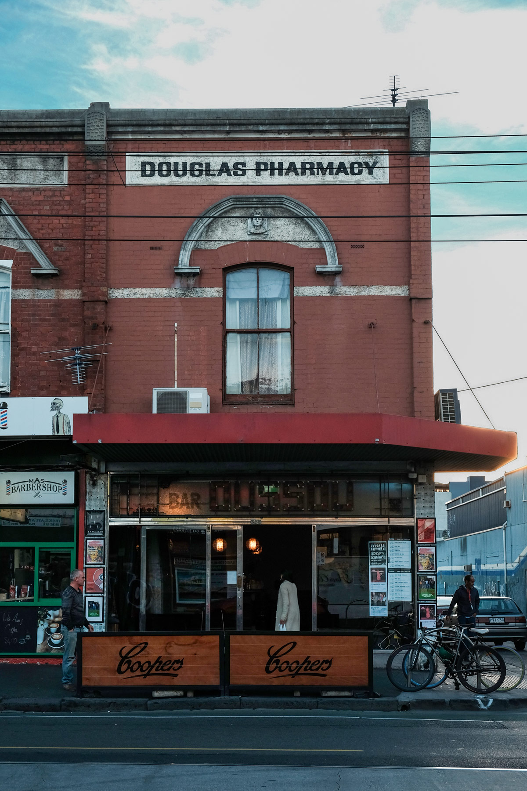
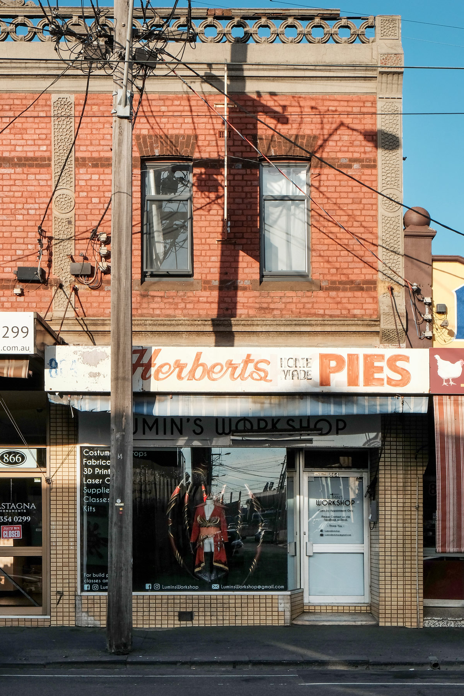

Hidden in plain sight among the cluttered and confusing graphic landscape of Melbourne's eclectic Sydney Road shopfronts; there lurks a history of everyday people and their experience making typographic decisions. When viewed together—through the window of a slow moving car or tram—the shops blend into a visual mess. However, when viewed in isolation, the facades reveal stories from the past and present. Stories of migration, hope and struggle that peak through peeling paint and neglect. This landscape is connected by a visual expression that shows a desire to grow and succeed in anyway possible—an inspiring, scrapping spirit.
Sydney Road is a seemingly on-going strip of retail shops that runs through the heart of Melbourne’s northern suburbs. While the road is far longer, this article concentrates on an approximate four kilometre stretch from Bell Street, Coburg to Brunswick Road, Brunswick.
The amount you can discover by focusing on the details is perplexing. The typography—and supporting design elements of the signage—in this context reveals many things about the sense of a place. How far does Sydney Road go to establishing itself as unique? Furthermore, what does the typography mean to the people who frequent this place
When the shopfronts are studied, significant information can be ascertained from the ‘mise en scène’. Informative factors include the age of the building, condition, method of signage production, business name, the location within the retail strip and whether or not the building has a ‘for lease’ sign plastered to the window. However it is much more fascinating—and appropriate for this article—to ignore these factors and explore what can be learned by simply observing the typography.
The style and script of the typeface can inform the cultural background and era of the business and customers. It is common to see multiple signs of varying age on a single building. If the signs are for a single business, the length of operation can be estimated. If the signs are for different businesses, a timeline of the stores history can be established. From these particular observations a general sense of a business’ success—or lack thereof—can be determined. Mixed signage highlights the socio-economic status and attitude of the tenants; removing past signage was seemingly not worth the cost. With an indication of culture, time and socio-economics from the type, the chaotic signage transforms into an ever-evolving tapestry of migration. When reading these signs, one can begin to imagine the historical life of Sydney Road.

Pharmacy and beer? yes pls.

Cosplay and pies? yes pls.
How does type with cultural meaning evoke a sense of place from where that culture originates? Would the Italian bakery, the Lebanese sweet shop or the Turkish restaurant fit in if they were in their respective countries? Potentially. Although, one could not be tricked into feeling that they are standing in the streets of Rome, Beirut or Istanbul—the experience inside the store may do the business more justice. The type alone simply conveys that of a typical cultural store in Australia.
Perhaps the function of this cultural signage is not to evoke the sense of being elsewhere—but to be exactly where it is. The type establishes a sense of community and belonging to people of that culture. Over time, Sydney Road has been a place for people from many different backgrounds to call their own. It must be refreshing and welcoming to see Arabic script in a country where it is otherwise lacking; just as it would be welcoming for myself to see Latin among the Hanzi in Beijing. It will be interesting to observe the impact of gentrification on these communities, as it romps down the road in the coming years.
Is there an overarching typographic trend that makes Sydney Road unique? No. Perhaps when observed with other factors somebody familiar with the area could guess the place—although not with absolute certainty. However, it is very interesting that cities across the globe with similar social, cultural and historical circumstance have a similar visual landscape. In my personal travels there are various places that convey the same aesthetic and sense of place—usually areas adjacent to the inner city. I have stumbled across this trend in Melbourne, Sydney, New York, Barcelona, Naples, Athens, cities across Japan and the Phillipines—and I am confident that this trend exists in many, if not most, cities around the world. But why is it the case?
This typography does not evoke a sense of place geographically. It evokes that of the lower socio-economic 'high street’ universally. The previously mentioned factors explain only part of the phenomenon. I believe there is something important to learn from it this type of Communication Design. Due to budget constraints the signage design has manifested from the minds of those with limited or no formal design knowledge—naive designers. As such, the design possesses an unrefined brutal honesty that reveals the intention and motive. Is there an intrinsic human element that flows into the design and typographic choices—and if so, what does that mean to the audience?
Design education cannot be un-learned; an education, which for the most part, serves the privileged minority. It is easy to label an ‘unsophisticated design’ aesthetic as wrong or incorrect as it undermines the foundations of the design profession. However in order to design for the ‘ninety percent’, the visual language must be studied, in order to understand why it is the way it is. Informed designers can work to improve the communication function of that code of design—assisting both the businesses and audiences that operate within that code.
Take some time to understand how the signage of your local massage parlour or pawn shop functions; new perspectives are invigorating.